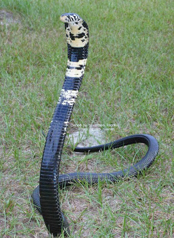
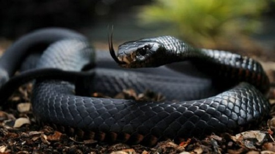
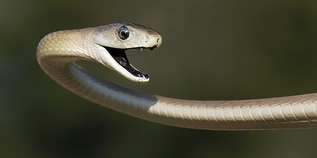
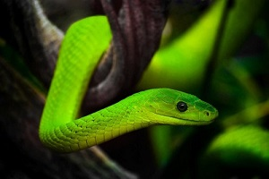
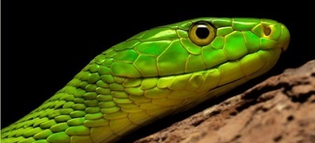
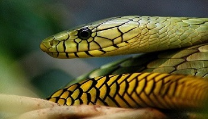
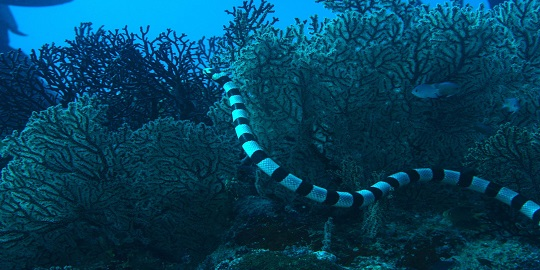

KING COBRA
In the snake world, the King Cobra is one of the poisonous snakes. It's maximum size is upto 19 feet and weighs upto 5-6 kilograms whereas it is also one of the longest deadly snake.King Cobras are mostly found in deep forests of South Asian continent and in large numbers in India.King cobras are fearless and fast species compared to other snakes in the world. King cobra has multiple different types of shiny colours of scales the most common is olive green colour and the other colours are black,reddish and grey. The lower part of king cobras is mostly light yellowish colour.King cobras have excellent sensing power and they mostly attack their preys in day time.Cobras mostly make the small preys as their food such as the rodents(rats),small birds and lizards, some large cobras can even eat a prey double of their size.King cobras venom is very poisonous it's venom can kill an average sized human being in less than an hour.
MAMBAS.
Mambas are another group of snakes, they are more deadly,more venemous and swift-moving snakes then any other species. Mambas are of four different types they are Black Mambas,Eastern Green Mambas,Western Green Mambas and the Jameson's Mambas.Mambas are thin,terrestrial and light weighted snakes. Mambas are mostly in green,brown and black in colour.Mambas are mostly available in the continent of Africa.Mambas have higly toxic poison which can kill any large prey in few seconds, a mamba's bite can be very dangerous for human beings as it's poison mostly affects the heart and lungs of human beings.Mambas mostly like to live in stems of trees and also in other places such as dense forests,rocky lands and in deserts.
BLACK MAMBA
Black Mambas are the most commonly known mambas. Black Mambas are light in colour than other mambas.Black mambas can grow upto a length of 4-5 meters and weigh upto 2 kgs,like other mambas black mambas are fastest they can speed upto 20km/h.These mambas are called black mambas because of their black coloured mouth. As black mambas are the longest but they are also thin in size they mostly feed on rats,small birds,reptiles such as frogs and geccos, etc.Black Mambas are founded in Kenya,South Africa,Zambia and Tanzania.
EASTERN GREEN MAMBA,JAMESON'S MAMBA AND WESTERN GREEN MAMBA
  | INFO | EASTERN GREEN MAMBA | JAMESON'S MAMBA | WESTERN GREEN MAMBA |
|---|---|---|---|
| Height | Eastern green mambas height is upto 6 feet. | Jameson's mambas height is upto 8 feet(longest snake compared to other mambas) | Western green mambas height is upto 5-7 feet. |
| Weight | They weigh upto --kgs. | Jameson's mamba weigh upto | These snakes weigh upto. |
| Diet | Eastern green mambas mostly feed on bats, rodents(rats),eggs and adult birds. | They mostly feed similar to other species of mambas. | Western green mambas preys are mainly small mammals such as squirrels,shrews,bats,frogs and small birds. |
| Locations | Eastern green mambas are mostly found in eastern part of east Africa,Mozambique,Kenya,etc and also in other major places of Africa. | Jameson's mamba are mostly occurs in Kenya,Nigeria,Congo,Uganda,etc. | These mambas are found in West Africa,Ghana,Guinea,and in other places of Africa. |
| Abilities | These mambas are expert to camouflage in deserts,dense forests and also in bushes. | They are arboreal(mostly stay in trees) and they are highly agile(swift moving) and they are not that alert compared to other mambas. | Western green mambas are more alert,more poisonous then eastern green mamba and very quick. |
CORAL REEF SNAKE.
Coral reef snake are commonly also known as the Sea snakes and their scientific name is (Hydrophiinae). These snakes are only found underwater as they spend their whole life in sea waters in the coral reefs.These snakes are mostly found in the seas of Australia and Pacific ocean as well as in the Indian ocean too.These snakes grow upto height of 4-5 feets.These snakes also has the ability to swim in deep waters that is upto 99 miles under the sea.Sea snakes are aggressive and their venom affects mostly after 30 minutes and their bite is not that painful but later the symptoms will start affecting.These snakes don't have gills like fishes to breathe but they come to the surface of the water to respire and underwater they respire through their skins.Sea snakes have two coloured strips on their bodies that is yellow and black or blue and black.They mostly feed on small fishes,shrimps,etc.
RETICULATED PYTHON.